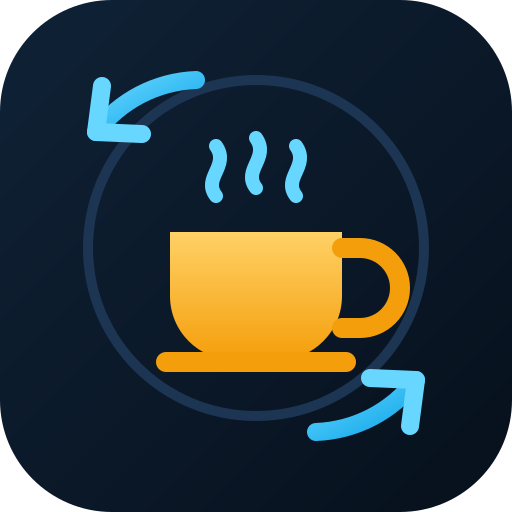

Total en cola
0
registros en IndexedDB

Tostaduría Andina
Panel de pedidos offline
Temas 5.1 · 5.2 · 5.3
IndexedDB guarda cada pedido en una cola local. El Service Worker la vacía en segundo plano
con Background Sync y reporta el resultado a la interfaz con postMessage.
Cien por ciento JavaScript Vanilla.
Total en cola
0
registros en IndexedDB
Pendientes
0
esperando envío
Enviados
0
confirmados por el servidor
Con error
0
revisar y reintentar
Primero se guarda localmente. Después se intenta enviar.
Estado real de la base outbox-db.
La cola está vacía
Crea un pedido con el formulario. Si no hay red, quedará aquí como pendiente.
Eventos de la página y mensajes recibidos del Service Worker.
Abre DevTools → Application → IndexedDB → outbox-db → outbox.
En Network elige Offline o activa el interruptor “Simular caída de red”.
Crea pedidos: verás registros pendientes con su payload completo.
Vuelve a Online y pulsa Sincronizar ahora. El SW envía y la UI se actualiza por postMessage.